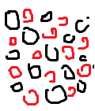
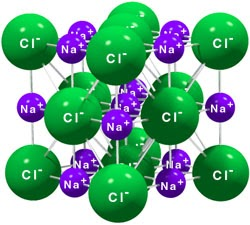
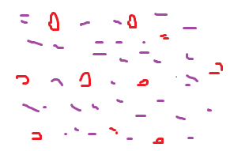
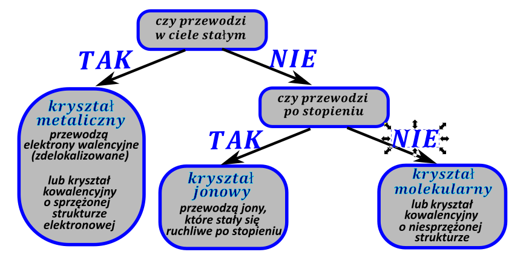

Makroskopowe właściwości związków w ciele stałym zależą od struktury cząsteczki i rodzaju połączeń między atomami w tej strukturze. Możemy wyróżnić 4 rodzaje rodzaje struktur w ciele stałym, zwane dalej typami krystalicznymi: Jonowe, metaliczne, cząsteczkowe i kowalencyjne. Ułożenie cząsteczek w ciele stałym opisuje tzw. komórka elementarna – jest najmniejszy fragment powtarzalny dla danego kryształu, struktura kryształu teoretycznie składa się z nieskończonej ilości powtarzalnych komórek elementarnych.
Kryształy jonowe występują dla związków, które w swojej budowie mają przynajmniej jedno wiązanie jonowe, mogą mieć w swojej strukturze również inne wiązania. Zbudowane są one z kationów i anionów rozmieszczonych powtarzalnie w przestrzeni. Drugim rodzajem kryształów są kryształy metaliczne, występują one tylko dla metali (metali, nie związków metali, związki tworzą inne rodzaje kryształów). Struktura tych związków jest dość specyficzna kationy metali otoczone są przez uwspólnione elektrony walencyjne. Struktura taka wygląda jak sernik, w którym zamiast ciasta mamy elektrony walencyjne, natomiast zamiast rodzynek występują kationy metalu lub metali. Jednocześnie taka struktura umożliwia łatwe tworzenie stopów metali – sernik z rodzynkami i żurawiną też można zrobić. Pytanie, po co, ale można. Największy problem w odróżnieniu jest pomiędzy kryształami molekularnymi i kowalencyjnymi, oba zbudowane są tylko z wiązań kowalencyjnych (spolaryzowanych lub nie, koordynacyjne też wchodzą w grę). Kryształy kowalencyjne mają strukturę teoretycznie nieskończoną, tzn. taką strukturę jesteśmy w stanie rysować w nieskończoność, więc teoretycznie wszystkie atomy stanowią jedną wielką sieć wiązań kowalencyjnych. Natomiast kryształy cząsteczkowe zbudowane są z powtarzalnych małych cząsteczek. Jesteśmy w stanie narysować jedną taką cząsteczkę, nie jest ona nieskończona. Cząsteczki te oddziaływają ze sobą słabymi wiązaniami np. wodorowymi, o czym dalej.
Z opisanych struktur jesteśmy w stanie wywnioskować typowe zachowanie, typowe parametry dla tych kryształów.
Temperatura topnienia – aby stopić dany kryształ musi przeprowadzić związek w fazę ciekła, a więc rozerwać wiązania pomiędzy cząsteczkami, jednak cząsteczki te dalej będą blisko siebie - ciecze i ciała stałe mają podobne gęstości. Najłatwiej oczywiście jest rozerwać wiązania międzycząsteczkowe między cząsteczkami w krysztale molekularnym – jak sama nazwa wskazuje są to wiązania słabe. Najtrudniej jest rozerwać wiązania międzycząsteczkowe dla kryształu kowalencyjnego – ten kryształ stanowi całą jedną cząsteczkę, należy więc rozerwać, albo bardzo osłabić silne wiązania kowalencyjne. Kryształy jonowe jest wymagają średniej temperatury topnienia (znane są również stopy kryształów jonowych, które są ciekłe w temperaturze około 60 O C). temperatura topnienia dla kryształów metalicznych zależy od metalu i może być względne niska (jak rtęć czy tal) do bardzo wysokiej (wolfram).
Temperatura wrzenia – znowu najłatwiej jest przeprowadzić w stan gazowy kryształy molekularne, z uwagi na słabe wiązania pomiędzy cząsteczkami tworzącymi te kryształy. Oczywiście im mniejsza cząsteczka tym łatwiej ogólnie ją przeprowadzić w stan gazowy. Z kolei najtrudniej przeprowadzić w stan gazowy kryształy kowalencyjne - wymaga to przeprowadzenia praktycznie nieskończonej cząsteczki w stan gazowy, a więc zniszczenia jej struktury i wiązań kowalencyjnych. Względnie łatwo można odparować metale, wówczas po prostu atom metalu przeprowadzany jest wraz ze swoimi elektronami walencyjnymi do fazy gazowej. Kryształy jonowe mają bardzo wysokie temperatury wrzenia w przeciwieństwie do temperatur topnienia. Różnica ta spowodowana jest różnymi gęstościami fazy gazowej i ciekłej. Ciekły stan skupienia jest stanem skupienia skondensowanym, tzn. cząsteczki są blisko siebie. Powoduje to, że kationy cały czas są otoczone z każdej strony anionami, co jest korzystne dla nich. W gazowym stanie skupienia cząsteczki są daleko od siebie, co powoduje, że niemożliwe otaczanie z każdej strony kationów przez aniony i vice wersa. Struktura, w której jony nie są otaczane przez przeciwjony z każdej strony jest bardzo niekorzystna, a więc ciężka do uzyskania.
Kruchość i kowalność – czyli co się stanie po uderzeniu młotkiem w kryształ.
Oczywiście najbardziej kruche są kryształy molekularne, cząsteczki w nich połączone są słabymi oddziaływaniami, a więc uderzenie powoduje ich zerwanie. Analogicznie najbardziej wytrzymałe są cząsteczki kowalencyjne – wyrwanie atomu wymaga zerwania sieci wiązań kowalencyjnych. Kryształy jonowe również są kruche, uderzenie w nie powoduje pęknięcie ich po płaszczyźnie. Nietypowo za to zachowują się kryształy metaliczne – są one kowalne tzn. na skutek uderzeń odkształcają się, a nie pękają. Wykorzystuje się tą cechę przy kuciu metali. Można porównać to do zachowania sernika, takiego o dużej zawartości na uderzenia młotka. Sernik się odkształci, rodzynki się poprzesuwają, ale z uwagi na lepkość sera, będzie on dalej w jednym kawałku.
Przewodnictwo prądu elektrycznego.
Przepływ prądu polega na uporządkowanym poruszaniu się ładunku elektrycznego. Aby więc wystąpił musimy w strukturze mieć cząstki obdarzone ładunkiem elektrycznym, które mogą się poruszać. W przypadku kryształów molekularnych cząsteczkami takimi są elektrony walencyjne tych metali, mogą one się swobodnie przemieszczać, nie są przywiązane do atomu metalu, z którego pochodzą. Kryształy jonowe zbudowane są z cząstek obdarzonych ładunkiem, jednak w ciele stałym są one tak gęsto ułożone, że nie mogą się poruszać swobodnie, więc nie przewodzą one prądu elektrycznego w ciele stałym. Stopienie kryształów jonowe powoduje zwiększenie dystansu między jonami, tym samym zwiększenie jonów ruchliwości i możliwości poruszania się tych nośników ładunku i „przepychania” między innymi jonami. Kryształy molekularne nie przewodzą prąd elektrycznego, brak tam jest nośników ładunku. Kryształy kowalencyjne w większości nie przewodzą, wyjątkiem są kryształy o układzie wiązań sprzężonych tzn. ich struktura składa się z na przemian występujących wiązań podwójnych i pojedynczych. Przykładem takiej struktury jest grafit lub azotek boru, jednak większość kryształów kowalencyjnych nie przewodzi.
Rozpuszczalność – ogólna zasada dotycząca rozpuszczalności mówi, iż podobne rozpuszcza podobne; więc związki jonowe będą dobrze rozpuszczalne przez inne związki o silnej polaryzacji (np. woda), metale będą dobrze rozpuszczane przez inne metale, szczególnie przez rtęć, która jest ciekła już w temperaturze pokojowej, a związki niepolarne będą dobrze rozpuszczane przez inne związki niepolarne. Np. metoda wydzielania złota – bierzesz piasek złotonośny, zalewasz go rtęcią, złoto się rozpuszcza, potem odsączasz/ dekantujesz, rtęć odparowujesz i na dole masz złoto. Oczywiście od każdej reguły są wyjątki, ale bardzo rzadko spotyka się roztwory metali w czymś innym niż drugi metal. Szczególną ostrożność należy zachować przy kryształach molekularnych w zależności od wielkości fragmentu hydrofilowego i hydrofobowego mogą one być rozpuszczalne zarówno w rozpuszczalnikach polarnych takich jak woda i amoniak lub w rozpuszczalnikach niepolarnych (benzyna, czterochlorek węgla). Związki, w których przeważa fragment hydrofilowy występuje dużo wiązań silnie spolaryzowanych np. dla cukru) lepiej oczywiście rozpuszczają się w rozpuszczalnikach polarnych; natomiast związki, w których przeważa fragment hydrofobowy występuje przewaga wiązań niespolaryzowanych np. cząsteczka \(I_{2}\) lepiej rozpuszczają się w rozpuszczalnikach niepolarnych. W zasadzie większość związków jonowych jest jedynie rozpuszczalnych w rozpuszczalnikach polarnych, niektóre są całkowicie nierozpuszczalne. Istnieją oczywiście duże związki organiczne tworzące kryształy jonowe, w których przeważa fragment hydrofobowy. Są one jednak pewnymi wyjątkami i nie spodziewamy się ich na maturze.
| Jonowe | Metaliczne – wiązanie metaliczne-szczególny typ wiązania | Cząsteczkowe/ molekularne | Kowalencyjne | |
|---|---|---|---|---|
| Budowa |
 Dobrze ułożona sieć krystaliczna zbudowana z kationów i anionów  |
 Związek metaliczny – sernik elektronowy – kationy metalu („rodzynki”) w chmurze elektronów walencyjnych. |
Struktury cząsteczek połączone wiązaniami wodorowymi lub innymi wiązaniami słabymi | Siec – wszystko połączone wiązaniami kowalencyjnymi |
| Uwagi | Jedno wiązanie jonowe w związku wystarczy, aby związek był jonowy. |
Kryształy metaliczne występują dla metali np. \(Fe\) jak również stopów metali np. \(Cu\text{ /}Zn\) . Ale nie dla związków metali. Np. \(FeCl_{3}\) |
Małe cząsteczki o zdefiniowanej strukturze, w których nie ma wiązania jonowego. Struktura cząsteczki jest skończona. | Duże cząsteczki, których atomy połączone sa wiązaniami kowalencyjnymi (ale nie jonowymi). Cząsteczka jest w teorii nieskończona (tzn. Jest czyms na ksztalt polimeru) |
| Temperatura topnienia | Średnia | Średnia do wysokiej, zależy od metalu | Niska, cząsteczki jest łatwo wyrwać z sieci krystalicznej, bo związane są słabymi oddziaływaniami. Im mniejsza masa molowa tym mniejsza temperatura. | wysoka |
| Temperatura wrzenia | Bardzo wysoka, nie możliwe jest otoczenie z każdej strony w fazie gazowej jednego kationy przez jeden anion | Średnia do wysokiej, zależy od metalu | Niska, bo związane są słabymi oddziaływaniami. Im mniejsza masa molowa tym mniejsza temperatura wrzenia. | Wysoka / niemożliwe |
| Kruchość/ kowalność | Kruche, pękają wzdłuż płaszczyzny utworzonej przez jony. | Kowalne, odkształcenie na skutek uderzeń | Bardzo kruche, bo związane są słabymi oddziaływaniami | Skrajnie wytrzymałe np. Dla diamentu wyciągnięcie jednego atomu – zerwanie sieci wiązań kowalencyjnych. Istnieją wyjątki np. diament, właściwości wynikają ze struktury |
| Przewodnictwo prądu elektrycznego (=ruchliwość ładunku, możliwość przenoszenia ładunku) |
Nie przewodzą w ciele stałym, -brak ruchliwości (poruszania) jonów, za duży ścisk, brak przepływu prądu. Przewodzą po stopieniu, na skutek zwiększeniu dystansu między jonami i tym samym umożliwieniu ich poruszania. Przewodzą po rozpuszczeniu w rozpuszczalniku polarnym – związki dysocjują na jony, które poruszają się oddzielnie. |
Dobrze w ciele stałym i po stopieniu, przez możliwość przemieszczanie się elektronów walencyjnych (te w „cieście sernika”). | Nie przewodzą, brak nośników ładunku – elektrony się nie mogą poruszać | Zależy do budowy, w większości brak przewodnictwa, konieczna obecność sprzężonych elektronów (np. Grafit) |
| Rozpuszczalność – podobne rozpuszcza podobne. Czyli jeżeli ja jestem pojebany to moi koledzy też. | Głównie rozpuszczalniki polarne, czyli np. woda | Rozpuszczalne w innych ciekłych metalach, przede wszystkim rtęci. | Zależy od struktury związku – podobne, głównie niepolarne (np. benzyna), chyba ze związek zawiera dużo grup polarnych lub grup, które robią wiązania wodorowe to wtedy rozpuszczalniki polarne | Nierozpuszczalne, gdyż teoretycznie są to związki nieskończone, a więc musimy mieć nie możliwe jest ich rozpuszczenie bez zniszczenia struktury. |
Oczywiście znając strukturę elektronową związku jesteśmy w stanie powiedzieć, jakie właściwości powinien on mieć (np. uporządkować temperatury topnienie i wrzenia), ale również jesteśmy w stanie poznać jaki typ kryształu tworzy dany związek znając jego właściwości. Zastosowanie porównywania temperatur jest dość niewygodne, gdyż wymaga ścisłego zdefiniowana pojęć średnia, wysoka, niska. Bardzo wygodnie jest interpretować typ kryształu przez porównanie przewodnictwa prądu danego związku:

W roztworach nośnikami ładunku mogą być tylko jony, więc jeżeli nieznana substancja rozpuszczona w wodzie powoduje wzrost przewodnictwa roztworu znaczy, że zdysocjowała ona na jony. Ewentualnie mogła ona przereagować z cząsteczką rozpuszczalnika, tworząc związek, który zdysocjował na jony, ale finalnie w roztworze musiały się znaleźć jony z uwagi na zwiększenie przewodnictwa.